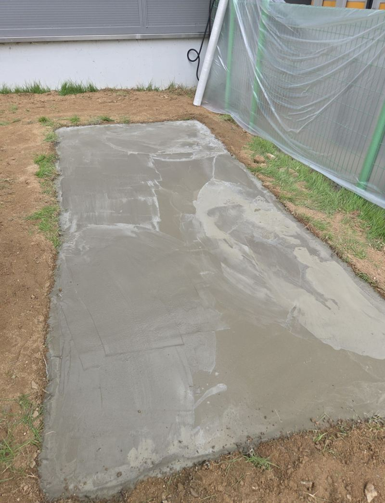
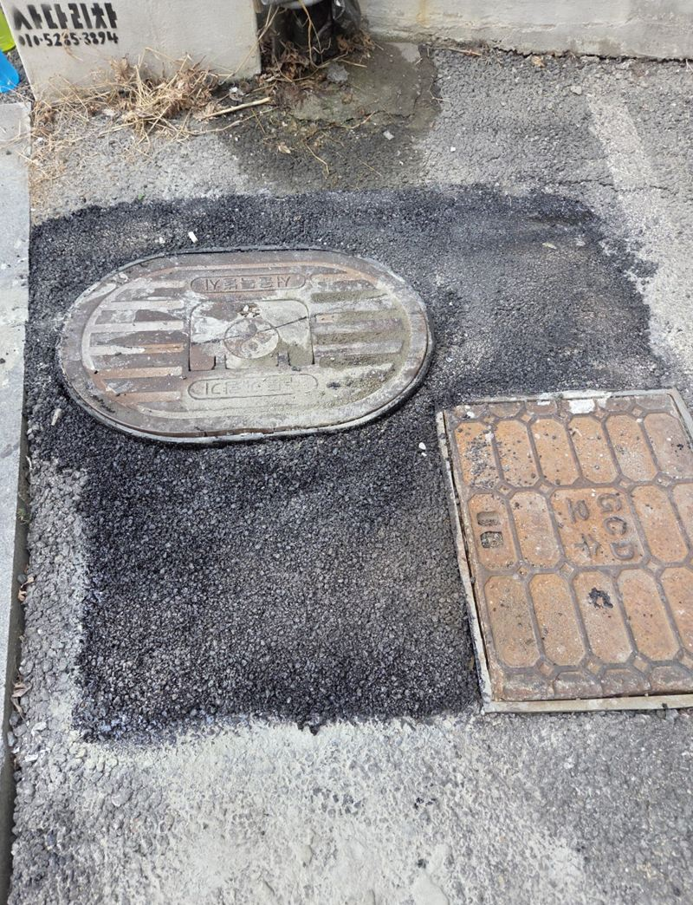
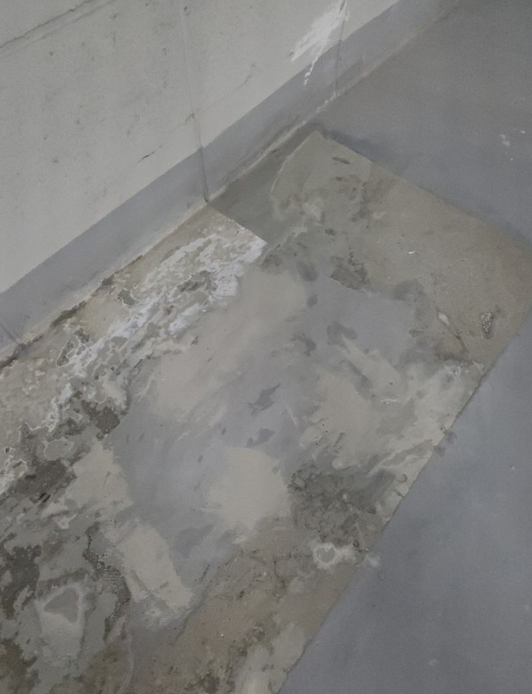
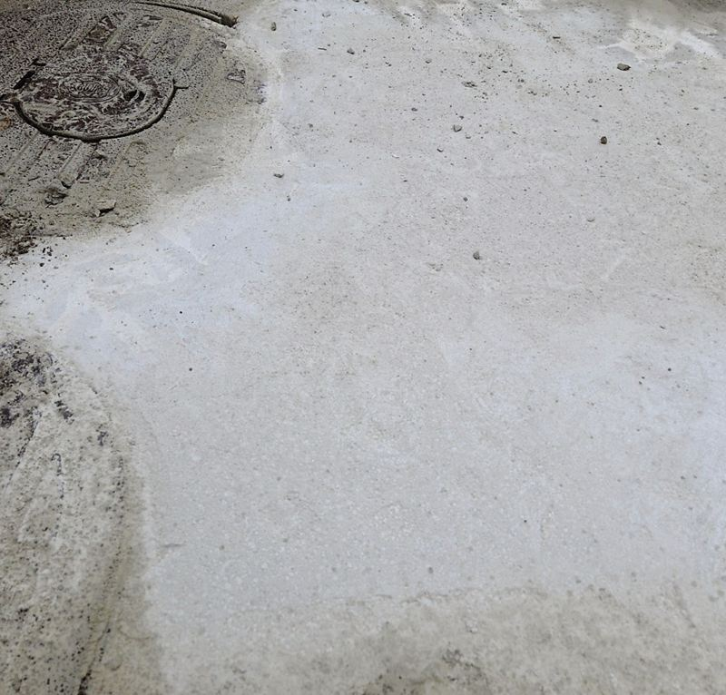
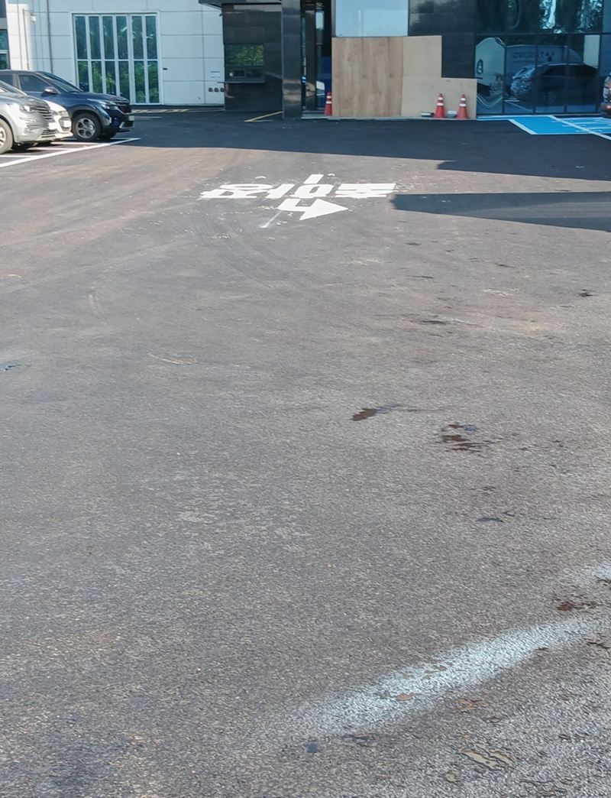
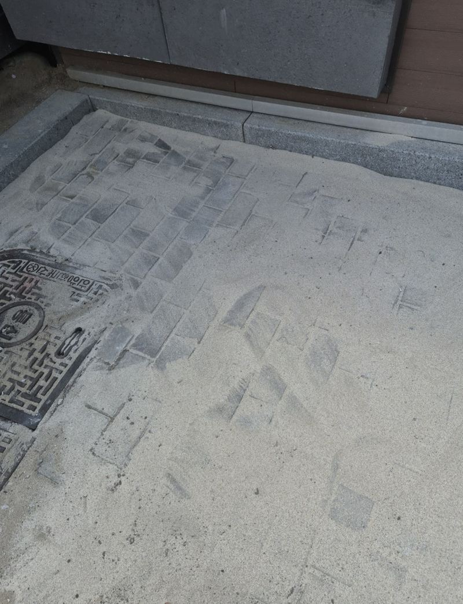
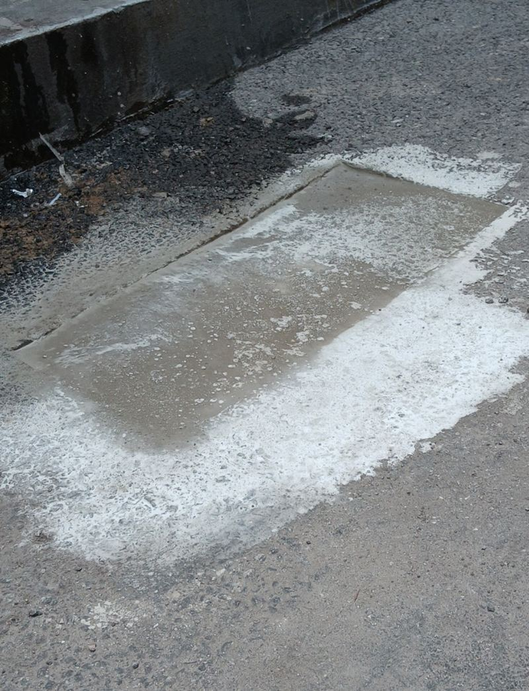
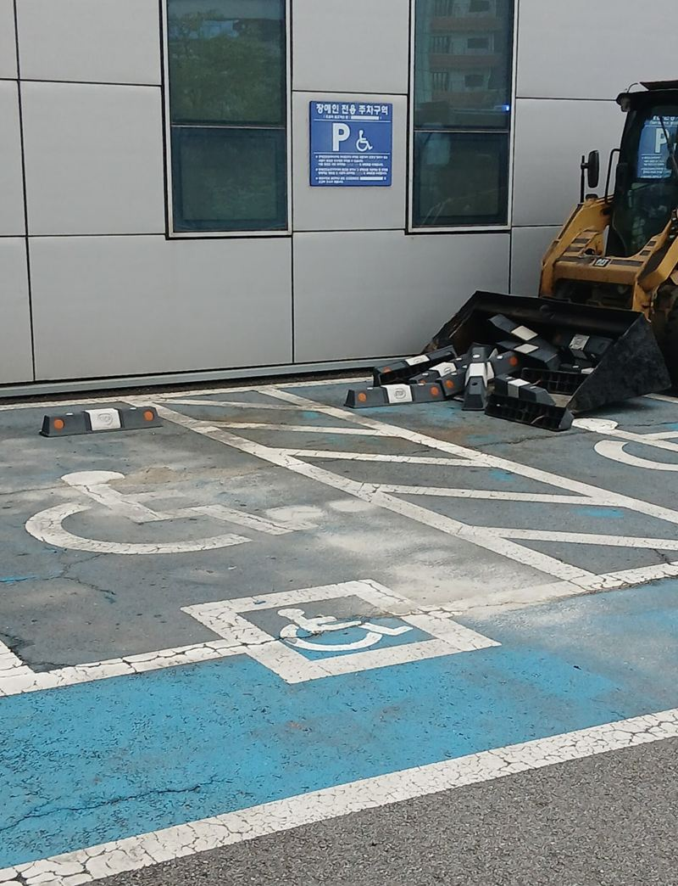

홈 › 콘크리트·아스팔트
주차장 땅꺼짐·콘크리트
균열 보수 공사 사례
주차장 바닥이 움푹 꺼지거나, 맨홀 주변이 깨지거나, 보도블럭이 내려앉으면 차와 사람이 걸려 넘어질 수 있어요. 단지 전체를 다시 포장할 정도가 아니라면 상한 구간만 걷어 내고 메우는 부분 보수로 빠르게 정리할 수 있어요.

바닥 문제별 보수 방법
| 문제 | 주로 쓰는 방법 |
|---|---|
| 아스팔트가 꺼지고 구멍이 났어요 | 꺼진 부분 정리 후 아스콘 채움·다짐 |
| 맨홀 주변이 깨졌어요 | 깨진 테두리 철거, 몰탈로 다시 잡기 |
| 콘크리트 벽·천장이 떨어져요 | 들뜬 부분 제거, 보수재로 복원 |
| 보도블럭이 내려앉았어요 | 블럭 걷기 → 바닥 다짐 → 재시공 |
| 실외기·설비 받침이 필요해요 | 거푸집 설치 후 콘크리트 패드 타설 |
| 주차선이 지워졌어요 | 바닥 정리 후 주차선 도색 |
보수 공사 전 관리사무소가 정할 것
작업 구간 차량 통제 시간, 굳는 동안 출입을 막을 방법, 입주민 안내 문구를 미리 정해 두시면 공사가 매끄러워요. 보수 범위는 꺼진 깊이와 면적에 따라 달라서 현장 사진에 줄자나 발을 함께 찍어 크기를 보여 주시면 상담이 빨라요.
바닥 보수 전에 많이 찾아보시는 것
- 맨홀 둘레가 꺼지면 전체를 뜯어야 할까?
- 맨홀 주변 땅꺼짐은 어떤 순서로 보수할까?
- 다시 내려앉지 않았는지 무엇을 볼까?
- 매립 콘크리트 패드는 일반 패드와 뭐가 다를까?
- 매립 패드는 어떤 순서로 만들까?
- 장비가 못 들어가는 곳도 패드를 칠 수 있을까?
- 주차장 하수구 주변은 왜 자꾸 꺼질까?
- 겉만 메우면 안 되는 이유는?
- 땅꺼짐 보수는 어떤 순서로 할까?
- 좁은 콘크리트 패드를 넓힐 수 있을까?
- 소형 거푸집은 어떻게 만들까?
- 패드에 철근을 넣는 이유는?
- 공사 중 깨진 콘크리트는 어떻게 메울까?
- 천장 보수가 바닥보다 어려운 이유는?
- 복원 후 무엇을 확인할까?
- 옥상 바닥 단차, 전체 철거해야 할까?
- 시멘트가 오래 붙어 있게 하려면?
- 엘리베이터 없는 옥상은 자재를 어떻게 올릴까?
- 갈라진 주차장 아스팔트, 덧씌우면 될까?
- 아스콘 재포장은 어떤 순서로 할까?
- 도로 복구 후 주차선은 언제 칠할까?
- 반지하 벽 곰팡이, 페인트만 칠하면 될까?
- 벽 균열에 방수크림은 어떻게 바를까?
- 방수 페인트를 오래 가게 칠하려면?
- 주차장 바닥은 왜 꺼질까?
- 꺼진 바닥은 어떤 순서로 보수할까?
- 겉만 메우면 왜 다시 꺼질까?
- 철거한 보도블럭은 다시 쓸 수 있을까?
- 보도블럭이 다시 꺼지지 않게 하려면?
- 보도블럭 재시공 견적은 무엇으로 정해질까?
- 보도블럭 교체에서 가장 중요한 단계는?
- 열선 매립 보행로는 어떻게 시공할까?
- 보도블럭이 다시 들뜨지 않게 하려면?
지역별 콘크리트·아스팔트 현장

천안 매립 콘크리트 패드 설치 방법천안
은평 주차장 땅꺼짐 구멍 시멘트·아스콘 보수서울 은평
강서 지하주차장 콘크리트 벽면·천장 복원 방법서울 강서 용인 기흥 시멘트 패드 소형 거푸집 설치 방법용인 기흥
용인 기흥 시멘트 패드 소형 거푸집 설치 방법용인 기흥
김포 주차장 맨홀 주변 땅꺼짐 몰탈 보수 방법김포
군포 도로 갈라짐·처짐 복구 공사 방법군포
인천 미추홀 내려앉은 보도블럭 재시공 견적인천 미추홀
서초 아스팔트 콘크리트 꺼짐 보수 공사 방법서울 서초 양평 보도블럭 교체 공사 방법과 순서양평
양평 보도블럭 교체 공사 방법과 순서양평 인천 연수구 콘크리트 시멘트 메꿈 작업 비용인천 연수
인천 연수구 콘크리트 시멘트 메꿈 작업 비용인천 연수 용산 콘크리트 내외벽 균열 방수 페인트 시공 방법서울 용산
용산 콘크리트 내외벽 균열 방수 페인트 시공 방법서울 용산 김포 소형 싱크홀 아스콘 부분 보수 방법김포 · 블로그 현장기 ↗
김포 소형 싱크홀 아스콘 부분 보수 방법김포 · 블로그 현장기 ↗
군포 주차장 바닥 주차선 도색 비용과 순서군포 · 블로그 현장기 ↗
바닥 보수 질문
비 오는 날에도 작업하나요?
시멘트·아스콘은 날씨 영향을 받아서, 비가 오면 일정을 조정하는 경우가 많아요.
보수한 자리가 다시 꺼지지 않을까요?
아래 지반이 계속 빠지는 경우라면 원인부터 봐야 해요. 현장에서 바닥 아래 상태를 확인하고 말씀드려요.
꺼지거나 깨진 바닥을 크기가 보이게 찍어서 보내 주세요.
전화 상담 010-4517-9872